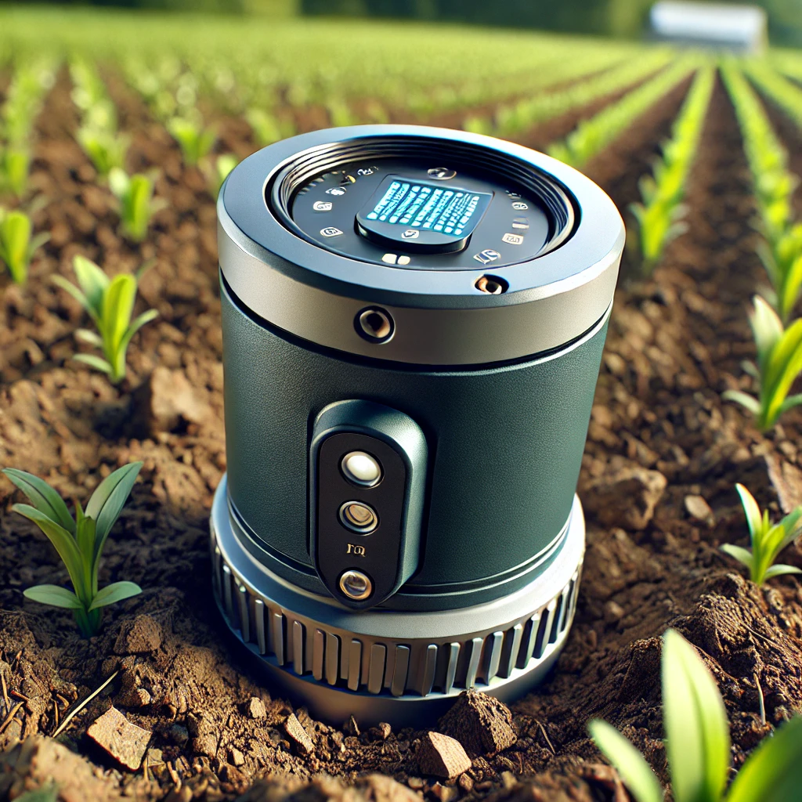

Soil Moisture Sensor
Current Moisture: 60%
Temperature Sensor
Current Temperature: 22°C
Nutrient Sensor
Current Nutrient Levels: 45%
AI-Based Analytics
- Precision Irrigation: Optimal irrigation time: 15:30
- Nutrient Management: Suggested fertilizer: NPK Mix
- Crop Yield Prediction: Predicted yield: 2000 kg
Energy Saving Features
- Battery Status: 85%
- Energy Source: Solar
AgriSave System Overview
This rendering illustrates how AgriSave works in the context of a smallholder farm in Brazil. It shows the placement of IoT sensors, the user interface, and how data is collected and analyzed for optimized irrigation and crop management.
- Sensor placement for soil moisture, temperature, and nutrients
- Data collection workflow
- AI-driven analysis for precision irrigation and nutrient management
How AgriSave Works: Storyboard
Step 1: The farmer installs the IoT sensors in key areas of the field, monitoring soil moisture, temperature, and nutrients.
Step 2: Data is sent to the AgriSave dashboard, which is accessible via mobile and desktop devices. The dashboard provides real-time insights into farm conditions.
Step 3: AI algorithms analyze the data to generate recommendations for optimal irrigation schedules, fertilizer application, and crop yield predictions.
Step 4: The farmer follows the recommendations, ensuring sustainable practices and improving crop yields while reducing water and fertilizer usage.
Step 5: AgriSave’s energy-saving features ensure that the system is powered efficiently using local renewable energy sources like solar power.